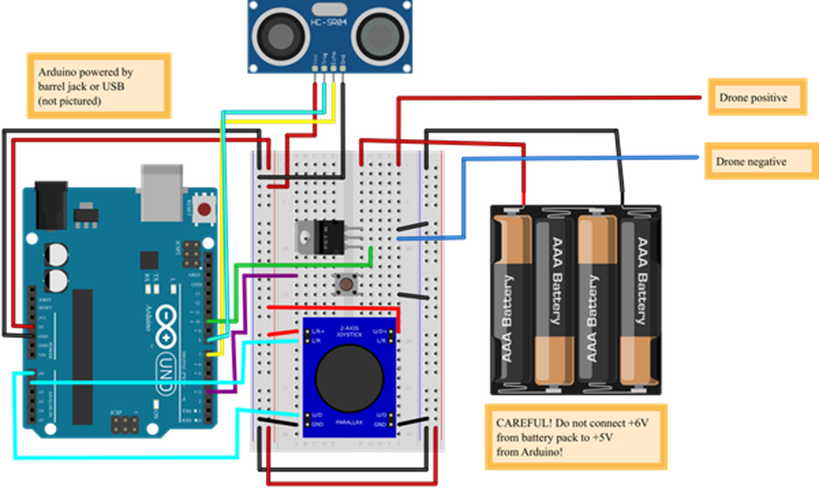

سرگرمی:
اپنے 'ایگسٹروناٹ' کی حفاظت کریں: ایک انڈے ڈراپ لینڈر بنائیں
خلاصہ:
تعارف:
سائنس کی بہت سی کلاسوں میں انڈے ڈراپ پروجیکٹ ایک کلاسک اور وقت کی عزت کی روایت ہے۔ مقصد عام طور پر ایک ایسا آلہ بنانا ہوتا ہے جو اونچی جگہ سے گرنے پر انڈے کی حفاظت کر سکے۔ یہ سرگرمی کلاسک پروجیکٹ پر ایک موڑ ڈالتی ہے، جو خلائی تحقیق میں حقیقی دنیا کی ترقی سے متاثر ہے۔ کیا آپ دوبارہ استعمال کے قابل ایگ ڈراپ لینڈر بنا سکتے ہیں جو ایک ہی اونچائی سے بار بار گرنے سے بچ سکے؟ اس سرگرمی کو آزمائیں اور معلوم کریں۔
مواد:
- کاغذ اور پنسل
- کچے انڈے
- صفائی کے لیے کاغذ کے تولیے۔
- مختلف قسم کے دستکاری اور تعمیراتی مواد جیسے پاپسیکل اسٹکس، پیپر کپ، انڈے کے کارٹن، گتے وغیرہ۔
- کشننگ مواد جیسے روئی کی گیندیں، ببل ریپ، Styrofoam®، وغیرہ۔
- ٹیپ اور/یا گلو
- اختیاری: پیراشوٹ بنانے کے لیے مواد، جیسے تار اور پلاسٹک کا بیگ
- انڈے کو گرانے کی جگہ جو انڈا ٹوٹنے کی صورت میں صاف کرنا آسان ہو گا۔
تیاری کا کام:
فیصلہ کریں کہ آپ اپنے انڈے کو کس اونچائی سے گرائیں گے۔ آپ کو اپنے پورے تجربے میں اس کو برقرار رکھنا چاہیے۔ سب سے آسان کام یہ ہے کہ فرش پر کھڑے ہو کر اسے سینے کی اونچائی سے گرا دیں۔ لیکن اگر آپ مہتواکانکشی محسوس کر رہے ہیں، تو آپ کرسی یا سیڑھی پر کھڑے ہو سکتے ہیں (ہوشیار رہیں!)
طریقہ کار
- شروع کرنے سے پہلے، اپنے انڈے کے لینڈر کے لیے کچھ ڈیزائن آئیڈیاز بنائیں۔ آپ کے پاس دستیاب مواد کے بارے میں سوچیں، اور آپ انہیں مختلف مقاصد کے لیے کیسے استعمال کر سکتے ہیں۔ مثال کے طور پر، کیا چیز انڈے کو تکیا کر سکتی ہے اور جب یہ زمین سے ٹکراتی ہے تو توانائی جذب کر سکتی ہے؟ کیا ساختی مدد فراہم کرے گا اور آپ کے لینڈر کو ایک ساتھ رکھے گا؟ آپ پیراشوٹ کیسے بنا سکتے ہیں؟ کم از کم تین مختلف ڈیزائنوں کے بارے میں سوچنے کی کوشش کریں۔
- اگر آپ کو شروع کرنے میں دشواری پیش آتی ہے تو، ایک بہت ہی بنیادی ڈیزائن میں گتے کے ایک چھوٹے سے ڈبے یا پلاسٹک کے کھانے کے ذخیرہ کرنے والے کنٹینر پر مشتمل ہو سکتا ہے، جس میں گدّی والے مواد سے لیس ہو، درمیان میں انڈے رکھے ہوں۔
- اپنے ڈیزائن میں سے ایک کو منتخب کریں اور ایک پروٹو ٹائپ بنائیں۔ اس بات کو یقینی بنائیں کہ آپ آسانی سے ڈیزائن کو کھول کر چیک کر سکتے ہیں کہ آیا انڈا ٹوٹ گیا ہے (مثال کے طور پر انڈے کو کسی ڈبے کے اندر مستقل طور پر ٹیپ نہ کریں)۔
- اپنے لینڈر میں ایک انڈا رکھیں اور اسے اس اونچائی سے گرائیں جس کا آپ نے فیصلہ کیا ہے۔
- چیک کریں کہ آیا انڈا ٹوٹ گیا ہے اور لینڈر کو ہی نقصان کے لیے چیک کریں۔
- لینڈر کو دوبارہ اسی اونچائی سے گرائیں۔ اس عمل کو دہرائیں، ہر بار نقصان کی جانچ پڑتال کریں، یہاں تک کہ انڈا ٹوٹ جائے یا لینڈر ٹوٹ نہ جائے اور اسے دوبارہ استعمال نہ کیا جا سکے۔ اس کے زندہ رہنے والے قطروں کی کل تعداد پر نظر رکھیں اور اس نمبر کو لکھیں۔
کیا آپ کو کوئی "کمزور دھبہ" یا لینڈر کے کچھ حصے نظر آتے ہیں جس نے آپ کی توقع کے مطابق کارکردگی نہیں دکھائی؟ آپ لینڈر کی کارکردگی کو بہتر بنانے کے لیے اسے کیسے تبدیل کر سکتے ہیں؟
- اپنے مشاہدات کا استعمال کرتے ہوئے، اپنے لینڈر کا دوسرا، بہتر پروٹو ٹائپ بنائیں، اور اسی عمل کے بعد اس کی جانچ کریں۔
کیا آپ کا بہتر لینڈر آپ کے اصل سے زیادہ قطروں سے بچتا ہے؟
سرگرمی:
ڈیزائن اور 3D اپنے کپڑے کو پرنٹ کریں۔
خلاصہ:
تعارف:
جب آپ 3D پرنٹنگ کے بارے میں سوچتے ہیں، تو آپ شاید ٹھوس اشیاء کے بارے میں سوچتے ہیں۔ لیکن کیا آپ جانتے ہیں کہ آپ لچکدار تانے بانے بنانے کے لیے تھری ڈی پرنٹر استعمال کر سکتے ہیں؟ یہ سرگرمی آپ کو دکھائے گی کہ آپ اپنے کپڑے کو کیسے ڈیزائن اور 3D پرنٹ کریں۔
مواد:
- انٹرنیٹ تک رسائی اور/یا کمپیوٹر ایڈیڈ ڈیزائن (CAD) سافٹ ویئر والا کمپیوٹر۔ Tinkercad® ایک اچھا ابتدائی دوست CAD پروگرام ہے۔
- 3D پرنٹر یا آن لائن 3D پرنٹنگ سروس تک رسائی
تیاری کا کام:
- 3D پرنٹ شدہ تانے بانے بنانے کے لیے آپ ایک سے زیادہ طریقے اختیار کر سکتے ہیں۔ ایک نقطہ نظر یہ ہے کہ آپس میں جڑے ہوئے حصوں کا ایک گرڈ پرنٹ کیا جائے، جس کے نتیجے میں ایک لچکدار میش ہو۔
- ایک اور طریقہ یہ ہے کہ ایک ہی مواد سے بنے ہوئے پتلے، زیادہ لچکدار ٹکڑوں سے جڑے ہوئے موٹے، سخت ٹکڑوں کو پرنٹ کریں۔ متبادل طور پر، اگر آپ کو دو میٹریل پرنٹر تک رسائی حاصل ہے، تو آپ زیادہ لچکدار مواد سے جڑنے والے ٹکڑوں کو پرنٹ کر سکتے ہیں۔
- ایک نقطہ نظر کا انتخاب کرنے کے لیے، آپ کو یہ جاننے کی ضرورت ہوگی کہ آپ کا 3D پرنٹر کیا سنبھال سکتا ہے۔ مختلف 3D پرنٹرز اور مواد کی مختلف حدود ہیں۔ مثال کے طور پر، کچھ 3D پرنٹرز آپس میں جڑے ہوئے حصوں یا حصوں کو بہت زیادہ اوور ہینگ اینگل کے ساتھ پرنٹ نہیں کر سکتے ہیں۔ دوسرے پرنٹرز صرف سپورٹ میٹریل یا سپورٹ سٹرٹس کے استعمال کے ذریعے کھڑی اوور ہینگس کو ایڈجسٹ کر سکتے ہیں، جنہیں پرنٹنگ کے بعد ہٹانا ضروری ہے۔
- زیادہ تر پرنٹرز میں مخصوص خصوصیات کے لیے کم از کم مطلوبہ سائز ہوتے ہیں۔ وہ پرزے جو بہت پتلے ہیں وہ صحیح طریقے سے پرنٹ نہیں کر سکتے ہیں یا پرنٹ کرنے کے بعد آسانی سے ٹوٹ سکتے ہیں۔

- یہ ایک عمومی جائزہ ہے نہ کہ مکمل فہرست۔ مخصوص معلومات کے لیے، آپ کو اپنے 3D پرنٹر کے لیے دستی کو پڑھنے کی ضرورت ہوگی۔ اگر آپ آن لائن 3D پرنٹنگ سروس استعمال کر رہے ہیں، تو دستیاب مواد کی خصوصیات اور حدود کے بارے میں پڑھیں۔ اگر آپ حدود کو جانتے ہیں، تو آپ کسی ایسے حصے کو ڈیزائن کرنے میں وقت ضائع نہیں کریں گے جو صحیح طریقے سے پرنٹ نہیں کرے گا (یا بالکل بھی)۔
- آخر میں، فیصلہ کریں کہ آپ کون سا CAD پروگرام استعمال کریں گے۔ اس سرگرمی کی مثالیں Tinkercad کو ظاہر کرتی ہیں، جو ابتدائی افراد کے لیے ایک CAD پروگرام ہے، لیکن آپ زیادہ جدید CAD پروگرام استعمال کر سکتے ہیں۔ اس سرگرمی کے لیے ہدایات فرض کرتی ہیں کہ آپ پہلے سے ہی جانتے ہیں کہ اپنی پسند کے CAD پروگرام میں بنیادی شکلیں کیسے بنائیں۔ اگر آپ ایسا نہیں کرتے ہیں، تو اس سرگرمی کو آزمانے سے پہلے آپ کو اپنے پروگرام کے لیے کچھ ٹیوٹوریل کرنے کی ضرورت پڑ سکتی ہے۔
طریقہ کار:
- اس بارے میں سوچیں کہ آپ کس قسم کا 3D پرنٹ شدہ فیبرک بنانا چاہتے ہیں۔ کیا آپ چاہتے ہیں کہ آپ کا کپڑا بہت لچکدار ہو یا نرم بھی محسوس ہو؟ کیا آپ چاہتے ہیں کہ یہ اپنی شکل برقرار رکھے؟ کیا اسے بہت سی روشنی (یا ہوا) گزرنے دینی چاہیے؟ آپ کا کپڑا کس چیز کے لیے استعمال کیا جا سکتا ہے؟ پریپ ورک سیکشن میں دکھائی گئی دو مثالوں کے علاوہ، مندرجہ ذیل تصویر کپڑے کی ایک اور مثال دکھاتی ہے۔ یہ چوکوں کے ایک گرڈ پر مشتمل ہوتا ہے جسے الگ کیا جا سکتا ہے، ان کے درمیان فاصلوں کو بڑھاتا ہے، تاکہ زیادہ ہوا یا روشنی گزر سکے۔
- اپنے تانے بانے کے بنیادی ڈیزائن کے بارے میں فیصلہ کریں (یعنی، یہ آپس میں جڑے ہوئے ٹکڑے ہوں گے یا لچکدار ٹکڑوں سے جڑے ہوئے سخت ٹکڑے)۔ اگر آپ کو شروع کرنے میں مدد کے لیے کچھ آئیڈیاز درکار ہوں تو آپ سائنس بڈیز ٹنکر کیڈ کے صفحہ پر ماڈلز کو براؤز کر سکتے ہیں (سرکل میش، مربع گرڈ، مثلث گرڈ)۔ آپ ترمیم کرنے کے لیے ان ڈیزائنوں کی کاپیاں بنا کر شروع کر سکتے ہیں، یا آپ اپنے نئے ڈیزائن شروع کر سکتے ہیں۔ اپنے 3D پرنٹر کی حدود پر غور کرنا یاد رکھیں، جیسا کہ پری ورک سیکشن میں بیان کیا گیا ہے۔
- آپ کا 3D پرنٹ شدہ تانے بانے دہرائی جانے والی اکائیوں کے پیٹرن پر مشتمل ہوگا۔ اس کا مطلب یہ ہے کہ، ایک CAD پروگرام میں، آپ کو ان میں سے صرف ایک یونٹ بنانے کی ضرورت ہے، پھر اس کی کاپیاں بنانے کے لیے ایک صف یا پیٹرن کی خصوصیت کا استعمال کریں۔ مثال کے طور پر، یہاں ٹنکر کیڈ میں مستطیل گرڈ فیبرک کی ایک کونے کی اکائی ہے، جو ایک مربع ٹکڑے اور دو مستطیل ٹکڑوں سے بنی ہے۔ بڑا مربع ٹکڑا زیادہ سخت ہوگا کیونکہ یہ موٹا ہے، اور چھوٹے ٹکڑے زیادہ لچکدار ہوں گے۔ ایک کونے سے شروع کرتے ہوئے اپنے فیبرک ڈیزائن کی ایک اکائی بنائیں۔
- اپنے فیبرک کی ایک اکائی کو ڈیزائن کرنے کے بعد، فیبرک کی مکمل شیٹ بنانے کے لیے اس کی کاپیاں بنائیں۔ اس بات کو یقینی بنائیں کہ ملحقہ اکائیاں مناسب طریقے سے سیدھ میں ہوں یا آپس میں بند ہوں اور کپڑے کا پورا ٹکڑا آپ کے پرنٹر کے باؤنڈنگ باکس میں فٹ ہو جائے۔ Tinkercad میں آپ "ڈپلیکیٹ اور ریپیٹ" بٹن کا استعمال کرتے ہوئے متعدد کاپیاں بنا سکتے ہیں۔
نوٹ: Tinkercad استعمال کرنے کا ایک نقصان یہ ہے کہ اگر آپ اپنا ڈیزائن تبدیل کرنا چاہتے ہیں، تو آپ جو تبدیلیاں اصل یونٹ میں کرتے ہیں وہ کاپیوں میں نہیں پھیلیں گی۔ آپ کو کاپیاں حذف کرنے اور عمل کو دوبارہ شروع کرنے کی ضرورت ہوگی۔ مزید جدید CAD پروگرام آپ کو اصل خصوصیت میں تبدیلیاں کرنے اور پھر باقی پیٹرن کو خود بخود اپ ڈیٹ کرنے کی اجازت دیں گے۔
- ایک بار جب آپ کا ڈیزائن تیار ہو جائے تو، اپنے کپڑے پرنٹ کرنے کے لیے اپنے پرنٹر یا آن لائن 3D پرنٹنگ سروس کی ہدایات پر عمل کریں۔ مثال کے طور پر، آپ کو اپنے پرنٹر کو بھیجنے کے لیے اپنے ڈیزائن کو بطور STL فائل برآمد کرنے کی ضرورت پڑ سکتی ہے۔
- اگر آپ آن لائن سروس استعمال کرتے ہیں تو آپ کے پرنٹ ہونے کا انتظار کریں، یا آپ کے پرزے آنے کا انتظار کریں۔ اگر ضروری ہو تو، اپنے پرنٹ سے معاون مواد کو ہٹا دیں۔
- اب اپنے کپڑے کی جانچ کریں۔ ہوشیار رہو کہ اسے نہ توڑو!
جب آپ اسے اٹھاتے ہیں تو فیبرک کتنا لچکدار ہوتا ہے؟ کیا یہ نرم محسوس ہوتا ہے؟ کیا ہوتا ہے جب آپ اسے موڑتے ہیں، اسے مروڑتے ہیں، یا اسے اپنی انگلیوں کے گرد لپیٹتے ہیں؟ یہ کیسا لگتا ہے؟
- اگر آپ کے پاس وقت ہے تو اپنے فیبرک ڈیزائن کو بہتر بنانے کی کوشش کریں اور دوسرا ورژن پرنٹ کریں۔ ایک ساتھ بہت سی چیزوں کو تبدیل کرنے کے بجائے، ایک مخصوص پہلو پر توجہ مرکوز کریں جسے آپ بہتر کرنا چاہتے ہیں۔ مثال کے طور پر، کیا آپ اپنے کپڑے کو زیادہ لچکدار بنا سکتے ہیں؟ کیا آپ اسے مضبوط بنا سکتے ہیں؟ اگر آپ کو اسے پرنٹ کرنے میں دشواری پیش آتی ہے (مثال کے طور پر، پرزے بہت چھوٹے تھے یا اوور ہینگ بہت کھڑی تھی)، کیا آپ پرنٹ کرنے میں آسانی پیدا کرنے کے لیے ڈیزائن کو تبدیل کر سکتے ہیں؟
سرگرمی:
اینالاگ جوائس اسٹک کے ساتھ ڈرون کنٹرول

خلاصہ:
- فعال وقت
2-3 گھنٹے
- کل پروجیکٹ کا وقت
2-3 گھنٹے
- بنیادی خیال
سرکٹس، پروگرامنگ، فورسز
تعارف:
آپ جوائس اسٹک کے ساتھ کنٹرولر کا استعمال کرتے ہوئے ڈرون کو کیسے چلاتے ہیں؟ اس سرگرمی میں معلوم کریں کہ جب آپ Arduino کو اینالاگ جوائس اسٹک کے ساتھ انٹرفیس کرنے کے لیے پروگرام کرتے ہیں، جیسا کہ زیادہ تر ویڈیو گیم کنٹرولرز میں پایا جاتا ہے۔ آپ جوائس اسٹک کو منی پاپسیکل اسٹک بنانے کے لیے ڈرون کو ایک طرف جھکاؤ یا اوپر اور نیچے لے جا سکتے ہیں۔
مواد:
- DIY منی ڈرون کٹ
- Arduino کے لیے سائنس بڈیز الیکٹرانکس کٹ
- -محور اینالاگ جوائس اسٹک
- کاغذ یا کارڈ اسٹاک کا ٹکڑا
- قینچی
- ونڈوز یا میک کمپیوٹر۔ بدقسمتی سے، Arduino سافٹ ویئر فی الحال Chromebooks کے ساتھ اچھا کام نہیں کرتا ہے۔ آپ کے کمپیوٹر کی ضرورت ہوگی:
- o Arduino IDE تک رسائی، یا تو انسٹال شدہ مقامی ورژن یا ویب پر مبنی ایڈیٹر۔
- o USB پورٹ۔ سائنس بڈیز کٹ USB-A سے B کیبل کے ساتھ آتی ہے۔ "B" اینڈ Arduino میں پلگ کرتا ہے اور "A" اینڈ آپ کے کمپیوٹر میں پلگ کرتا ہے۔ اگر آپ کے کمپیوٹر میں صرف USB-C پورٹس ہیں تو آپ کو ایک اڈاپٹر یا مختلف کیبل کی ضرورت ہوگی۔
تیاری کا کام:
اس پروجیکٹ کو کرنے سے پہلے، آپ کو یا تو DIY Mini Drone: Arduino™ Altitude کنٹرول یا پروگرام ڈرون اسٹیئرنگ Arduino® پروجیکٹ کے ساتھ کرنا ہوگا۔ ایک بار جب آپ ان میں سے ایک پروجیکٹ مکمل کر لیتے ہیں، تو آپ کنٹرول انٹرفیس (یا تو ایک پوٹینومیٹر یا پش بٹن، بالترتیب) کو اپنے اینالاگ جوائس اسٹک سے بدل سکتے ہیں، اور کنٹرول کے لیے جوائس اسٹک استعمال کرنے کے لیے اپنے Arduino پر نیا کوڈ اپ لوڈ کر سکتے ہیں۔
طریقہ کار:
اونچائی پر قابو پانے کے لیے جوائس اسٹک
اگر آپ نے DIY Mini Drone: Arduino™ Altitude Control پروجیکٹ کیا ہے، تو اونچائی پر قابو پانے کے لیے پوٹینٹومیٹر کو جوائس اسٹک سے تبدیل کرنے کے لیے ان ہدایات پر عمل کریں۔
- اپنے سرکٹ کو دوبارہ بنائیں جیسا کہ نیچے دیے گئے خاکے میں دکھایا گیا ہے (بریڈ بورڈ لے آؤٹ یا سرکٹ ڈایاگرام کے بڑے ورژن کے لیے کلک کریں)۔
- پوٹینومیٹر کو مکمل طور پر ہٹا دیں۔
- جوائس اسٹک کے لیے جگہ بنانے کے لیے آپ کو بریڈ بورڈ پر بٹن کو اوپر لے جانے کی ضرورت ہوگی۔
- جوائس اسٹک کے پنوں کو اس طرح جوڑیں:
- L/R+ اور U/D+ سے 5V (بریڈ بورڈ مثبت بس)
- L/R سے Arduino اینالاگ ان پٹ A1
- U/D سے Arduino اینالاگ ان پٹ A0
- GND سے بریڈ بورڈ گراؤنڈ بس
- drone_altitude_joystick.ino ڈاؤن لوڈ کریں اور اسے اپنے Arduino پر اپ لوڈ کریں۔
جب آپ کوڈ چلاتے ہیں اور جوائس اسٹک کو اوپر اور نیچے دھکیلتے ہیں تو کیا ہوتا ہے؟
کیا کچھ ہوتا ہے اگر آپ جوائس اسٹک کو بائیں سے دائیں دھکیلتے ہیں؟
- کوڈ میں اسکیل متغیر کو تبدیل کرنے کی کوشش کریں۔ یہ متغیر کنٹرول کرتا ہے کہ جوائس اسٹک سے اینالاگ وولٹیج کتنی جلدی ڈرون کے ہدف کی اونچائی کو تبدیل کرتا ہے۔ تعداد جتنی کم ہوگی، ڈرون اتنی ہی تیزی سے حرکت کرے گا۔
جب آپ اس نمبر کو تبدیل کرتے ہیں تو کیا ہوتا ہے؟ کیا آپ ایسی قدر تلاش کر سکتے ہیں جو جوائس اسٹک سے ڈرون کو کنٹرول کرنے کے لیے "بالکل صحیح" محسوس کرتی ہو؟
ڈرون اسٹیئرنگ کے لیے جوائس اسٹک
اگر آپ نے Arduino® پروجیکٹ کے ساتھ پروگرام ڈرون اسٹیئرنگ کیا ہے، تو اسٹیئرنگ کنٹرول کے لیے بٹنوں کو
جوائس اسٹک سے تبدیل کرنے کے لیے ان ہدایات پر عمل کریں۔
- اپنے سرکٹ کو دوبارہ بنائیں جیسا کہ نیچے دی گئی تصویر میں دکھایا گیا ہے۔
- روٹی بورڈ سے چاروں پش بٹنوں کو ہٹا دیں۔
- جوائس اسٹک کے پنوں کو اس طرح جوڑیں:
- L/R+ اور U/D+ سے 5V تک (نیچے دیے گئے خاکے میں بریڈ بورڈ مثبت بس کو چھوڑا ہے—بیٹری پیک سے 6 کے لیے دائیں بس کا استعمال کیا جاتا ہے۔ دونوں کو متصل نہ کریں!)۔
- L/R سے Arduino اینالاگ ان پٹ A1۔
- U/D سے Arduino اینالاگ ان پٹ A0۔
- GND سے بریڈ بورڈ گراؤنڈ بس۔
- drone_steering_joystick.ino ڈاؤن لوڈ کریں اور اسے اپنے Arduino پر اپ لوڈ کریں۔
کیا ہوتا ہے جب آپ کوڈ چلاتے ہیں اور جوائس اسٹک کو اوپر نیچے یا ایک طرف دباتے ہیں؟
کیا کچھ ہوتا ہے اگر آپ جوائس اسٹک کو دائرے میں منتقل کرتے ہیں؟
- کوڈ میں کئی متغیرات ہیں جنہیں آپ تبدیل کرنے کے ساتھ تجربہ کر سکتے ہیں، لیکن آپ کو محتاط رہنے کی ضرورت ہے (اگلے مرحلے میں مزید تفصیل سے بیان کیا گیا ہے)۔ آپ اپنے ڈرون کو نہیں توڑیں گے، لیکن آپ ان متغیرات کے لیے درج کردہ اقدار کے لحاظ سے کچھ عجیب یا غیر متوقع سلوک دیکھ سکتے ہیں۔
- ڈیفالٹ اسپیڈ ہر موٹر کے لیے پہلے سے طے شدہ رفتار سیٹ کرتی ہے جب جوائس اسٹک غیر جانبدار پوزیشن میں ہوتی ہے۔
- speedChange ہر موٹر کے لیے زیادہ سے زیادہ ممکنہ رفتار کی تبدیلی کا تعین کرتا ہے۔
- ایک ضرب ہے جو اینالاگ جوائس اسٹک وولٹیج کو ہر موٹر کے لیے رفتار کی تبدیلی میں تبدیل کرتا ہے۔
- ان اقدار کو تبدیل کرتے وقت آپ کو محتاط رہنے کی ضرورت کیوں ہے؟ اوور فلو نامی کسی چیز کی وجہ سے۔ Arduino analogWrite() فنکشن کے ذریعے پلس چوڑائی ماڈیولیشن (PWM) سگنل کا استعمال کرتے ہوئے موٹرز کی رفتار کو کنٹرول کرتا ہے۔ Arduino UNO کے لیے، analogWrite() صرف 0 اور 255 کے درمیان کی اقدار کو قبول کرتا ہے۔ اگر آپ 256 کی قدر درج کرنے کی کوشش کرتے ہیں، تو یہ اوور فلو ہو جائے گا اور واپس صفر تک پہنچ جائے گا۔ اس کے برعکس، اگر آپ -1 کی قدر داخل کرنے کی کوشش کرتے ہیں، تو یہ واپس 255 تک پہنچ جائے گی۔ یہی وجہ ہے کہ آپ کو ڈیفالٹ اسپیڈ، اسپیڈ چینج، اور ایک متغیر کو تبدیل کرتے وقت محتاط رہنے کی ضرورت ہے۔ آپ کے درج کردہ اقدار پر منحصر ہے، کوڈ موٹر اسپیڈ کی قدروں (جیسے متغیر موٹر 1 اسپیڈ) کا حساب لگا سکتا ہے جو کہ اجازت شدہ 0–255 کی حد سے باہر ہیں۔ اس کے نتیجے میں ڈرون کا عجیب رویہ ہوگا، جیسے کہ موٹر بہت آہستہ گھومتی ہے جب آپ اسے بہت تیزی سے گھومنے کی توقع رکھتے ہیں، جس کی وجہ سے آپ کا ڈرون غلط سمت میں جھک جاتا ہے۔ آپ IF سٹیٹمنٹس شامل کر کے اس مسئلے کو حل کر سکتے ہیں تاکہ یہ یقینی بنایا جا سکے کہ موٹر کی رفتار اجازت شدہ حد کے اندر رہے، جیسے:
if(motor1speed>255){motor1speed=255;}
if(motor1speed<0){motor1speed=0;}
سرگرمی:
ایلین جینیٹکس کی تحقیقات کریں۔
خلاصہ:
- فعال وقت
30-45 منٹ
- کل پروجیکٹ کا وقت
30-45 منٹ
- بنیادی خیال
جینیات، خصائص کی وراثت
تعارف:
کیا آپ نے کبھی سوچا ہے کہ حیاتیاتی بہن بھائی اتنے ایک جیسے کیوں نظر آتے ہیں؟ وہ اکثر جسمانی خصلتوں کا اشتراک کیوں کرتے ہیں، جیسے بالوں کا رنگ یا آنکھوں کا رنگ؟ یہ سب ان کے جینوں سے تعلق رکھتا ہے۔ جینز والدین سے ان کی اولاد میں منتقل ہوتے ہیں۔ اس کا مطلب یہ ہے کہ آپ اپنے حیاتیاتی والدین اور بہن بھائیوں کے ساتھ ایک ہی جین میں سے کچھ کا اشتراک کرتے ہیں! اس سرگرمی میں، آپ یہ ظاہر کرنے کے لیے ایک اجنبی ماڈل استعمال کریں گے کہ جینز یا جسمانی خصلتیں والدین سے ان کی اولاد میں کیسے منتقل ہوتی ہیں۔ آپ کے اجنبی بہن بھائی کتنے ملتے جلتے نظر آئیں گے؟
مواد:
- ایلین جینوٹائپ ٹیبل اور ایلین فینوٹائپ ٹیبل
- تعمیراتی کاغذ، مختلف رنگ (نارنجی اور سبز شامل ہونا ضروری ہے)
- قینچی
- ٹیپ
- گلو
- مارکر، کریون، یا رنگین قلم
- پینسل
- دو سکے
نوٹ: آپ اجنبی بچوں کو تعمیراتی کاغذ سے بنانے کے بجائے انہیں بھی کھینچ سکتے ہیں، اس صورت میں تعمیراتی کاغذ، قینچی، ٹیپ اور گوند کی ضرورت نہیں ہے۔
تیاری کا کام:
- ایلین جینوٹائپ ٹیبل اور ایلین فینوٹائپ ٹیبل پرنٹ کریں۔
طریقہ کار:
- ایلین جینوٹائپ ٹیبل کا جائزہ لیں اور اجنبی کی مختلف خصوصیات کو دیکھیں۔ یہ یقینی بنانے کے لیے کہ آپ ٹیبل کو صحیح طریقے سے سمجھتے ہیں درج ذیل سوالات کے جواب دیں۔
جدول کی بنیاد پر، کیا جلد کا سبز رنگ غالب ہے یا متواتر خصوصیت؟ ایک اجنبی کی کتنی انگلیوں کی انگلیاں ہوں گی جس کی پیر کی جین کی مختلف شکل غالب ہو؟ اجنبی ماں کی انگلی کے جین ٹائپ کو دیکھ کر، اس کی کتنی انگلیاں ہیں؟
- دونوں والدین کے جین ٹائپ کو دیکھیں۔
تمام خصلتوں کے لیے والدین دونوں کے جینی ٹائپ کو دیکھتے وقت آپ کو کیا نظر آتا ہے؟
- دونوں اجنبی والدین کے لیے فینوٹائپ ٹیبل پُر کریں۔
ان کے جین ٹائپ کی بنیاد پر، اجنبی ماں اور اجنبی والد کی طرح نظر آتے ہیں؟
- اجنبی ماں اور اجنبی باپ کو ان کے فینوٹائپس کی بنیاد پر کھینچیں۔
- اب وقت آگیا ہے کہ ان دو والدین سے ایک اجنبی بچہ پیدا کیا جائے۔ دو سکے لے لو۔ ایک سکہ اجنبی والد کی نمائندگی کرتا ہے، دوسرا سکہ اجنبی ماں کی نمائندگی کرتا ہے۔ ہر ایک خاصیت کے لیے سکے کو ٹاس کریں تاکہ یہ معلوم کیا جا سکے کہ دو ایللیس میں سے کون سا اجنبی بچے کو منتقل ہوتا ہے۔ سروں کا مطلب ہے غالب ایلیل کو منتقل کیا جاتا ہے، دم کا مطلب ہے کہ ریکسیوی ایلیل کو منتقل کیا جاتا ہے۔
- ہر سکے کو ٹاس کرنے کے بعد، ایلین جینوٹائپ ٹیبل میں اجنبی بچے کے لیے نتیجے میں جینو ٹائپ بھریں۔ ایک مثالی جدول یہاں دکھایا گیا ہے۔
اجنبی بچے کو اپنی ماں سے وراثت میں کیا ملا ہے؟ اس کے والد سے کون سی؟
- ایک بار جب آپ تمام خصلتوں کے ساتھ مکمل ہو جائیں تو، ایلین فینوٹائپ ٹیبل میں بچے کا فینوٹائپ پُر کریں۔ ایک مثالی جدول یہاں دکھایا گیا ہے۔
کیا آپ پہلے ہی ٹیبل سے بتا سکتے ہیں کہ کیا اجنبی بچہ اپنے والدین سے ملتا جلتا ہے یا مختلف؟
- تعمیراتی کاغذ سے اپنے اجنبی بچے کو ڈرا یا تخلیق کریں۔ بیبی ایلین کی فینو ٹائپ آپ کو بتاتی ہے کہ بچہ ایلین کیسا لگتا ہے۔ آپ کسی بھی ایسی خصلت کا انتخاب کر سکتے ہیں جو میز پر درج نہیں ہیں، جیسے کہ بازوؤں یا ٹانگوں کی لمبائی، آنکھوں کا رنگ، وغیرہ۔ یہاں ایک اجنبی بچے کی مثال دکھائی گئی ہے۔
اجنبی بچہ کیسا لگتا ہے؟ یہ اپنے والدین کے ساتھ کون سی خصلتیں بانٹتا ہے؟
- ایلین فینوٹائپ ٹیبل میں، ان تمام خصلتوں کو نشان زد کریں جو بچہ اپنے والدین کے ساتھ شیئر نہیں کرتا ہے۔
کیا اس میں کوئی ایسی خصلت ہے جو والدین میں نہیں ہوتی؟
- ایک اجنبی بچے کو اسی طرح بنائیں جیسا کہ آپ نے پہلے کیا تھا۔
اجنبی بہن بھائی ایک دوسرے سے کتنے مختلف ہیں؟
- ایک Punnett مربع کھینچیں جو یہ ظاہر کرتا ہے کہ اجنبی بچے کو اس کے والدین سے مخصوص خصلت وراثت میں ملے گی۔ پنیٹ اسکوائر کی مثال دیکھنے کے لیے ڈیپنگ ڈیپر سیکشن کا جائزہ لیں۔
اس بات کا کیا امکان ہے کہ اجنبی بچے کا ایک ہی خصلت کے لیے اس کے والدین جیسا فینوٹائپ ہو گا؟ کیا امکان ہے کہ اجنبی بچہ ایک مختلف فینوٹائپ دکھائے گا؟